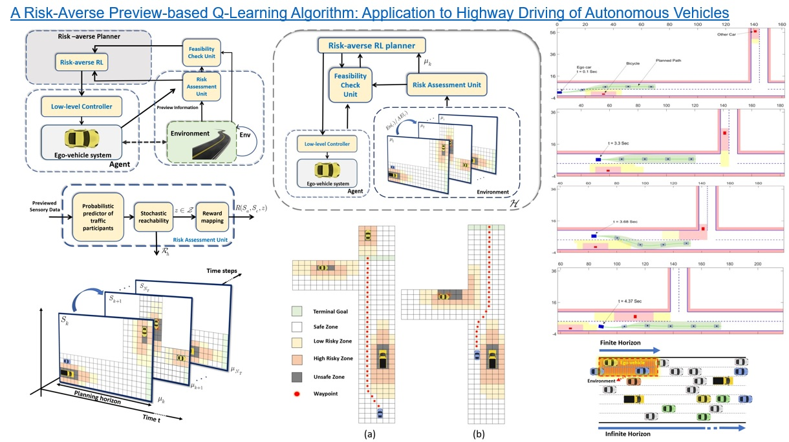
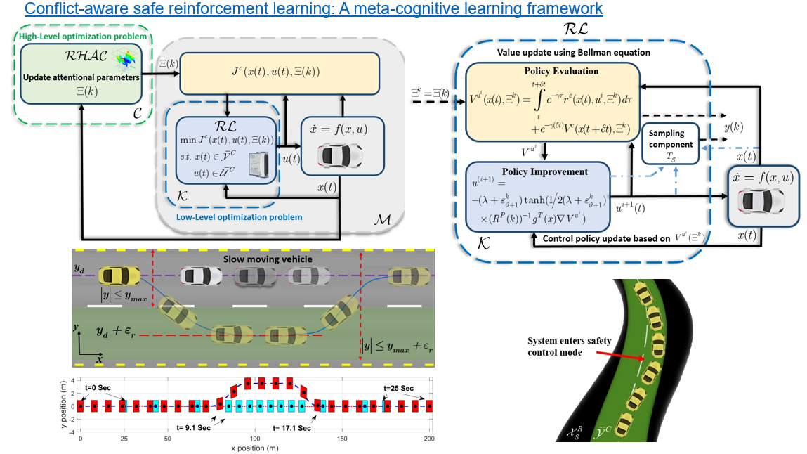
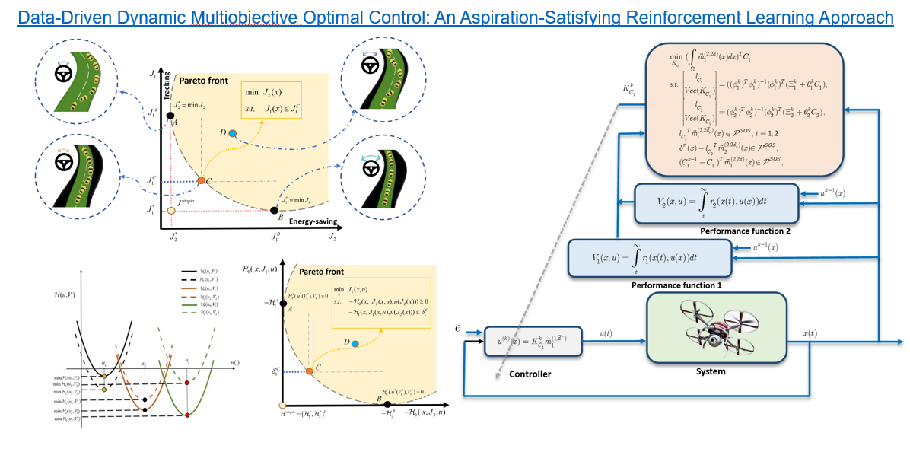
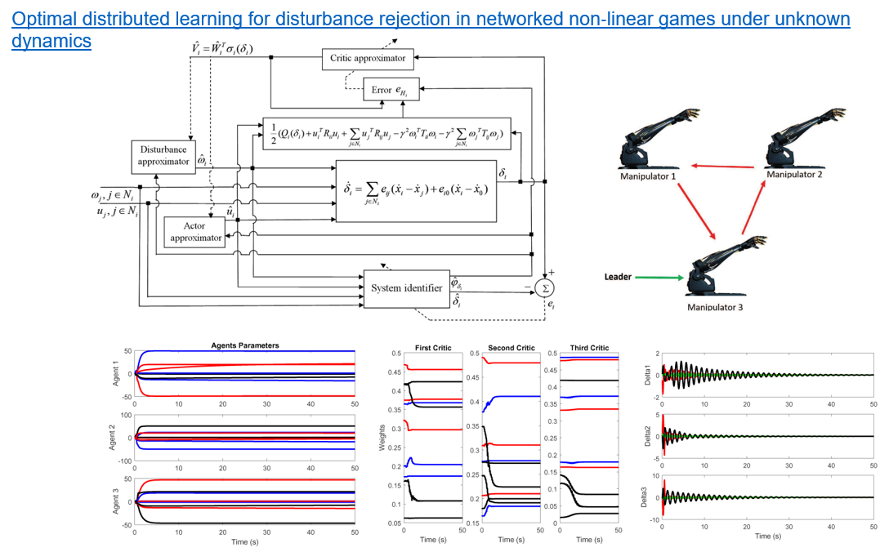
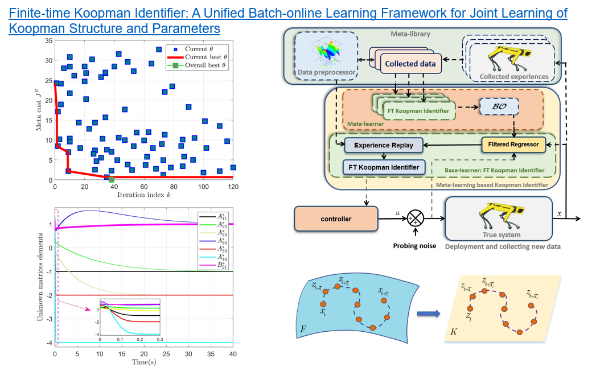
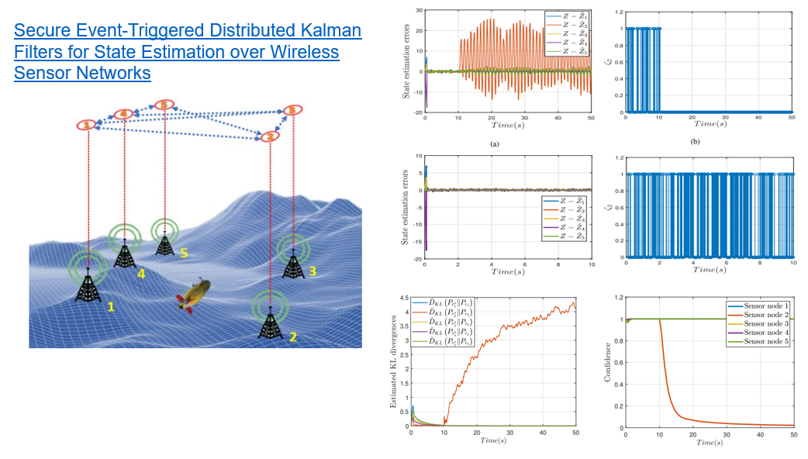
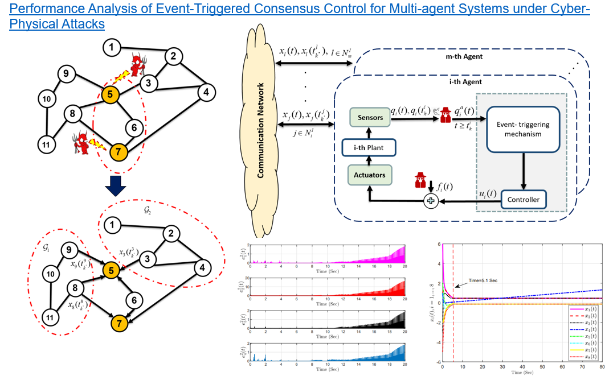
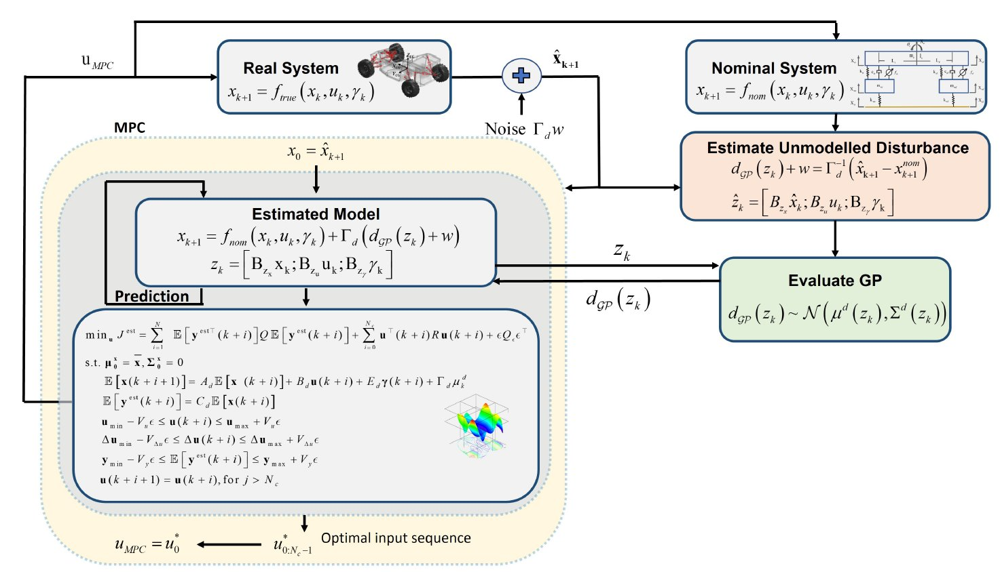
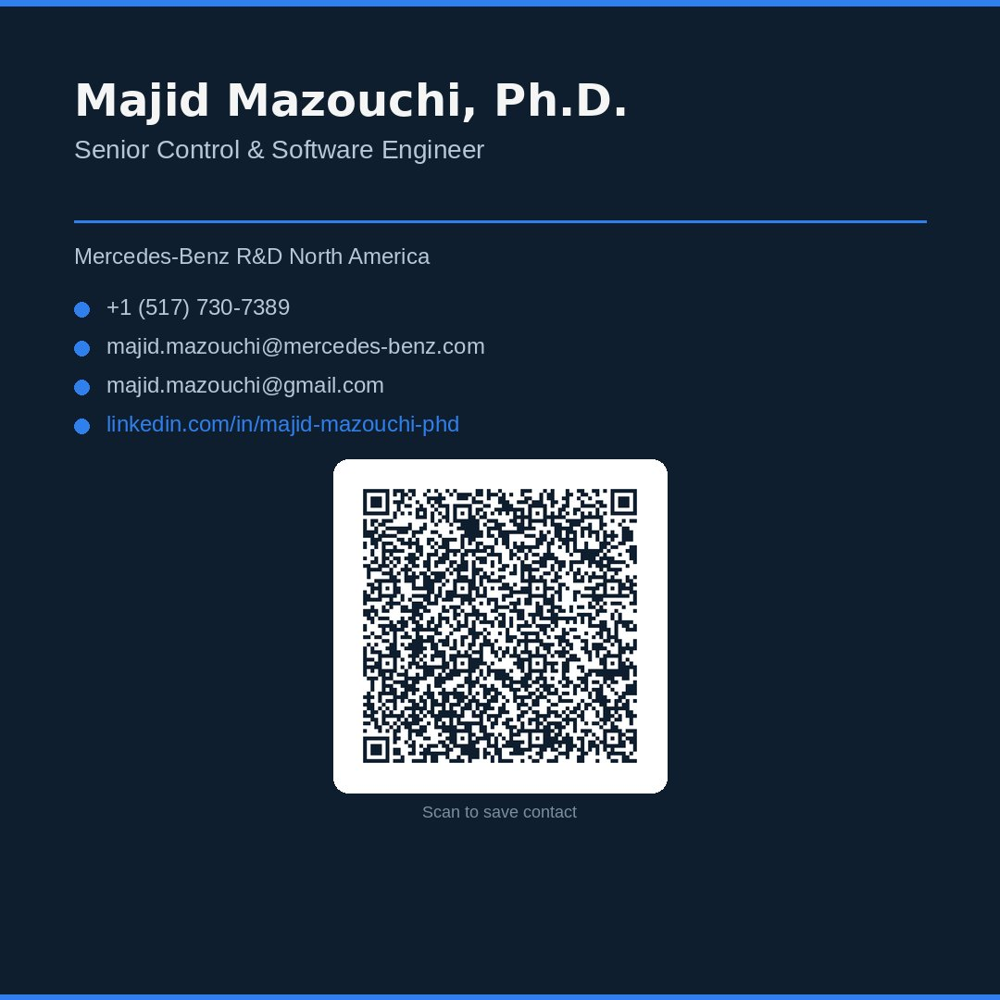

Senior Application Software Engineer on the Electric Motor Control team — bridging control theory, embedded systems, and AI/ML to push the frontier of electric powertrain technology.
I'm an engineer who thrives at boundaries — where control theory meets embedded software, where machine learning meets motor physics, and where research ideas become production code. I hold a Ph.D. in Electrical Engineering (Control) from Ferdowsi University of Mashhad, and spent four years as a postdoctoral researcher at Michigan State University collaborating with Ford Motor Company on safe reinforcement learning for autonomous vehicles, Koopman-based dynamics modeling, and distributed multi-agent decision-making.
At Mercedes-Benz R&D, I own features end-to-end — from algorithm design through TargetLink implementation to HiL/dyno/vehicle validation. My recent work includes adaptive harmonic current suppression and a neural network flux predictor deployed on Infineon TriCore, both backed by patent disclosures. On the tooling side, I build AI-powered platforms that automate documentation, generate requirements, and accelerate calibration workflows for the motor control team.
I'm driven by the idea that the best engineering happens when deep domain knowledge meets modern AI — and I enjoy building the bridges between those worlds. Outside of work, I'm usually on a volleyball court.
PMSM & Axial Flux Machine control, MTPA/MTPV optimization, adaptive harmonic current suppression, NN flux prediction, flux map stitching & smoothing
Simulink, TargetLink, Stateflow, Simscape, Plecs, AUTOSAR, ASIL-compliant development, IEEE-754 numerics, fixed-point implementation
dSPACE MicroAutoBox & SCALEXIO, Plexim RT Box, HiL/Dyno/Vehicle testing, CANoe, CANape, CarSim, rapid prototyping
Reinforcement learning, neural networks, Gaussian process regression, PINNs, LangGraph/ReAct multi-agent, RAG systems, model compression for TriCore MCUs
MATLAB, Python, C, C++, HTML/JS, Git, Bash, LabView, ROS
Leading development of advanced electric motor control algorithms and AUTOSAR-compliant embedded software for series-production Mercedes-Benz electric powertrains.
Developed learning-based controllers and estimation algorithms for electric vehicles operating on rough terrain to enhance stability, safety, and ride performance.
Led research on safe reinforcement learning, Koopman-based vehicle dynamics, and distributed control for autonomous driving — in collaboration with Ford Motor Company.
My work spans production-grade motor control software, AI-powered engineering platforms, and foundational research in safe reinforcement learning, distributed control, and vehicle dynamics.
Led end-to-end feature development of AHCS for electric motors — from algorithm design through software integration, calibration, and system validation across HiL, dyno, and vehicle platforms. Performed phasor/frequency-domain analysis and diagnosed a critical TargetLink type-mismatch bug. Filed patent disclosure (2024).
Managed development of a neural network-based flux predictor deployed on Infineon TriCore MCU for real-time motor flux estimation. Validated in HiL. Collaborated with the University of Alabama on PINN-based flux prediction for IPM motors. Filed patent disclosure (2025).
Developed a comprehensive MATLAB-based flux map toolchain with automated stitching of multi-region measurement data, surface smoothing, and MTPA/MTPV operating curve calculation. Features agentic AI skills for automated analysis workflows and structured report generation for calibration teams.
Conceptualized and built WarpDrive, an agentic AI platform for engineering workflows. Includes a Knowledge Engine with RAG architecture, autodoc tool, requirements generator, and test case generator. Presented the concept in PI planning and team presentations with LangGraph/ReAct multi-agent orchestration.
Built an interactive GUI-based documentation assistant that leverages LLMs to automate generation of engineering documentation — including autodoc block descriptions, requirements, and test cases — from Simulink/TargetLink model context. Streamlines documentation workflows for the motor control team with structured output and review integration.
Built a suite of standalone HTML-based internal tools: Innovation Hub (innovation proposals, radar chart assessments, problem-solution linking), HiL Testing Portal, and engineering workflow dashboards — all with integrated AI assistant capabilities via GenAI Nexus.
Developed piecewise equidistant flux map lookup tables for O(1) indexing with region-specific resolution. Built neural network flux prediction models with pruning, quantization, and projection for TriCore MCU deployment. Also created the LUT Examiner v1.0.8 toolbox-independence patch for MATLAB R2019b.
Built a MATLAB-based NVH analysis and calibration toolchain for electric motor drives. Automates order analysis, harmonic decomposition, and vibration spectrum visualization from dyno and vehicle measurement data. Supports calibration parameter tuning for harmonic current suppression strategies with interactive plotting and structured export for cross-team reporting.

Developed a risk-averse high-level planner for autonomous vehicle highway navigation around static and moving obstacles. Combines preview-based state information with Q-learning under CVaR risk constraints.

Designed a meta-cognitive RL framework that detects and resolves conflicts between performance objectives and safety constraints, enabling assured autonomous control with behavioral plasticity.

Created an iterative data-driven algorithm using aspiration-satisfying reinforcement learning to solve dynamic multiobjective optimal control problems in nonlinear continuous-time systems.

Developed a novel distributed optimal adaptive control algorithm for disturbance rejection in networked nonlinear games under unknown dynamics, using critic, actor, and disturbance approximators with online system identification.

Developed a unified batch-online learning framework for joint learning of Koopman structure and parameters, with an adaptive update law using discontinuous gradient flows and concurrent learning for fixed-time convergence of uncertain nonlinear dynamics.

Developed an information-theoretic approach to detect attacks on wireless sensor networks and a meta-Bayesian confidence/trust framework to mitigate attack effects on distributed state estimation.

Analyzed performance of event-triggered consensus protocols for multi-agent systems under cyber-physical attacks, studying the impact of attacks on communication networks and designing resilient event-triggering mechanisms for distributed coordination.

Developed a novel suspension control framework combining learning-based MPC with road preview information and Gaussian process regression to capture unmodeled dynamics. Achieved 48.7% reduction in total absorbed power vs. MPC and 63.7% reduction in WRMS vertical acceleration vs. Skyhook. Validated in CarSim with a half-car model. Supported by U.S. Army DEVCOM GVSC.
Adaptive Harmonic Current Suppression (2024) and NN Motor Flux Predictor (2025) — filed at Mercedes-Benz R&D North America.
Frontiers in Control Engineering — Research Topics on safe data-driven control and finite-time learning.
In IEEE TAC, IEEE TNNLS, IEEE TSMC, IEEE/CAA JAS, and top venues in controls and learning systems.
Recognized at Mercedes-Benz R&D North America for accountability, innovation, and teamwork (2025).
Ph.D. — Electrical Engineering (Control)
Dissertation: Online Sub-optimal Cooperative Control of Multi Agent Systems: Reinforcement Learning Approach
GPA: 4.0/4.0 — Graduated with Honors
M.Sc. — Electrical Engineering (Control)
Dissertation: Adaptive Probabilistic Fuzzy Controller in Evolutionary Algorithms for Non-Stationary Environment
GPA: 4.0/4.0 — Graduated with Honors
B.Sc. — Electrical Engineering (Control)
Business Card
